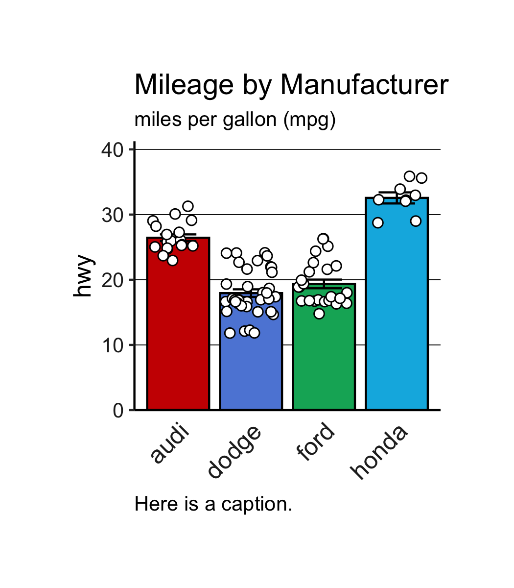
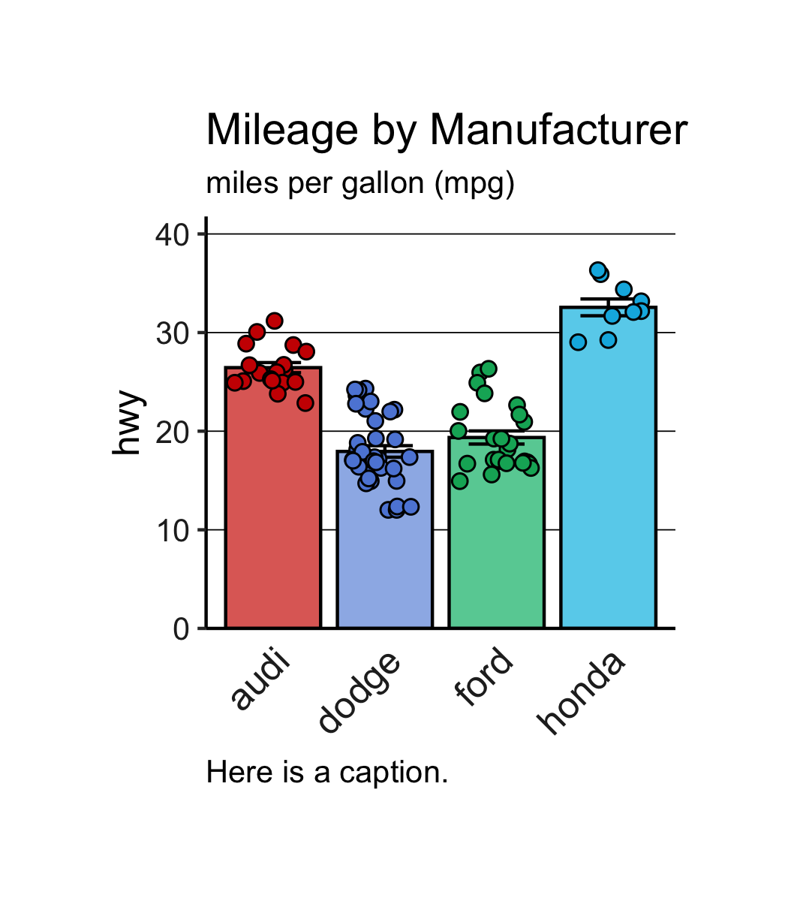

library(dplyr)
library(tibble)
library(tidyr)
library(ggplot2)
library(ggnewscale)
library(cowplot)Barplots
r
ggplot
Barplots are not terribly straightforward. Here are some templates I reference from time to time.
Libraries
Functions & Helpers
Code
hex_opacity_to_opaque <- function(hex, opacity) {
# hex = vector of hex codes
# opacity = decimal e.g. 0.65
# Returns hex codes equivalent in color to applying the opacity
# but they remain opaque
rgb_cols <- grDevices::col2rgb(hex)
return_hex <- character(length = length(hex))
for (i in seq_along(hex)) {
old_red <- rgb_cols[1, i]
new_red <- 255 - (opacity * (255 - old_red))
old_green <- rgb_cols[2, i]
new_green <- 255 - (opacity * (255 - old_green))
old_blue <- rgb_cols[3, i]
new_blue <- 255 - (opacity * (255 - old_blue))
return_hex[i] <- rgb(new_red, new_green, new_blue, maxColorValue = 255)
}
return_hex
}
bar_theme <- theme(
plot.title = element_text(size = 14, hjust = 0),
plot.subtitle = element_text(size = 10, hjust = 0),
plot.caption = element_text(size = 10, hjust = 0),
plot.caption.position = "panel",
axis.title.x = element_blank(),
axis.title.y = element_text(size = 12),
axis.text.x = element_text(color = "#252525", size = 12, angle = 45, hjust = 1),
axis.text.y = element_text(color = "#252525", size = 10),
axis.ticks.x = element_blank(),
axis.line.y = element_line(),
axis.line.x = element_line(),
panel.grid.major.y = element_line(linewidth = 0.20, linetype = 1, color = "black"),
panel.grid.major.x = element_blank(),
panel.grid.minor = element_blank(),
panel.border = element_blank(),
panel.background = element_rect(fill = "transparent", color = NA),
plot.background = element_rect(fill = "transparent", color = NA),
legend.position = "none",
plot.margin = margin(0.5, 0.5, 0.5, 0.5, unit = "in")
)Example Data
Example data from ggplot2 package.
data <- ggplot2::mpgOftentimes I’ll make some minor tweaks to a dataset in a disposable object called dp (“data plot”). For instance, here I’ll subset the manufacturer column to just a few brands. I can also do all sorts of changes without worrying about messing too much with a data object that might be used all over the place in an analysis.
This subsetting could also be done within a call to ggplot2::ggplot(), but I like to make it transparent all in one section or series of pipes.
dp <- data |>
dplyr::filter(manufacturer %in% c("audi", "dodge", "ford", "honda")) |>
dplyr::mutate(manufacturer = factor(manufacturer)) |>
dplyr::select(manufacturer, hwy)
lapply(dp, \(x) summary(x))$manufacturer
audi dodge ford honda
18 37 25 9
$hwy
Min. 1st Qu. Median Mean 3rd Qu. Max.
12.00 17.00 21.00 21.54 25.00 36.00 Barplot with dots and errorbars
Since we are dealing with long data, we can use ggplot2::stat_summary() to compute the height of the bars (the means). Normally, geom_col() would take just the height of each bar, or geom_bar() might count the instances of each. Similarly, we can compute the errorbars with ggplot2::mean_se()
colors <- c("#CC0B00", "#5D88DA", "#02AF66", "#02B5E2")
p <- ggplot(dp, aes(x = manufacturer, y = hwy)) +
stat_summary(aes(fill = manufacturer),
geom = "col", fun = mean, width = 0.85, color = "black") +
stat_summary(geom = "errorbar", fun.data = mean_se,
width = 0.5, linewidth = 0.5) +
geom_point(shape = 21, size = 2, fill = "white",
position = position_jitter(width = 0.35)) +
scale_y_continuous(expand = expansion(mult = c(0, 0.15))) +
scale_fill_manual(values = colors) +
bar_theme +
labs(
title = "Mileage by Manufacturer",
subtitle = "miles per gallon (mpg)",
caption = "Here is a caption."
)
p
The white dots look okay. You could also color the dots by group, but I don’t really like the bars and dots being the exact same color.
Code
cowplot::plot_grid(
p + labs(title = "White dots", subtitle = NULL, caption = NULL),
ggplot(dp, aes(x = manufacturer, y = hwy)) +
stat_summary(aes(fill = manufacturer),
geom = "col", fun = mean, width = 0.85, color = "black") +
stat_summary(geom = "errorbar", fun.data = mean_se,
width = 0.5, linewidth = 0.5) +
geom_point(aes(fill = manufacturer), shape = 21, size = 2,
position = position_jitter(width = 0.35)) +
scale_y_continuous(expand = expansion(mult = c(0, 0.15))) +
scale_fill_manual(values = colors) +
bar_theme +
labs(title = "Colored dots"),
nrow = 1
)When you set the colors of a fill aesthetic using scale_fill_manual(), it sets the colors for all of the layers. You can use ggnewscale::new_scale_fill() to make different colors, allowing you to call scale_fill_manual() more than once.
I like how things look when the bars are a bit lighter than the points. I like to set the colors once (just one palette to worry about), and then I use a function to lighten up all the colors. You could use something with alpha to change the opacity, but I don’t like how this makes the gridlines and anything else behind it come through. So I use a function defined above hex_opacity_to_opaque() which takes colors and returns non-transparent lightened versions of each color.
colors <- c("#CC0B00", "#5D88DA", "#02AF66", "#02B5E2")
ggplot(dp, aes(x = manufacturer, y = hwy)) +
stat_summary(aes(fill = manufacturer),
geom = "col", fun = mean, width = 0.85, color = "black") +
scale_fill_manual(values = hex_opacity_to_opaque(colors, 0.6)) +
new_scale_fill() +
stat_summary(geom = "errorbar", fun.data = mean_se,
width = 0.5, linewidth = 0.5) +
geom_point(aes(fill = manufacturer), shape = 21, size = 2,
position = position_jitter(width = 0.35)) +
scale_y_continuous(expand = expansion(mult = c(0, 0.15))) +
scale_fill_manual(values = colors) +
bar_theme +
labs(
title = "Mileage by Manufacturer",
subtitle = "miles per gallon (mpg)",
caption = "Here is a caption."
)
Using “dodge”
In the above example, the fill aesthetic does not pose any problems for spacing and alignment, as each bar on the x-axis maps 1:1 with the colors given to each bar.
When you set a fill aesthetic that is different from the x-axis categories, each bar will “dodge” into respective colors, in this instance.
Session info
─ Session info ───────────────────────────────────────────────────────────────
setting value
version R version 4.2.3 (2023-03-15)
os macOS Big Sur ... 10.16
system x86_64, darwin17.0
ui X11
language (EN)
collate en_US.UTF-8
ctype en_US.UTF-8
tz America/Denver
date 2023-12-06
pandoc 3.1.1 @ /Users/knitzm/miniconda3/bin/ (via rmarkdown)
─ Packages ───────────────────────────────────────────────────────────────────
package * version date (UTC) lib source
cli 3.6.1 2023-03-23 [1] CRAN (R 4.2.0)
colorspace 2.1-0 2023-01-23 [1] CRAN (R 4.2.0)
cowplot * 1.1.1 2020-12-30 [1] CRAN (R 4.2.0)
digest 0.6.33 2023-07-07 [1] CRAN (R 4.2.0)
dplyr * 1.1.3 2023-09-03 [1] CRAN (R 4.2.0)
evaluate 0.22 2023-09-29 [1] CRAN (R 4.2.3)
fansi 1.0.5 2023-10-08 [1] CRAN (R 4.2.3)
farver 2.1.1 2022-07-06 [1] CRAN (R 4.2.0)
fastmap 1.1.1 2023-02-24 [1] CRAN (R 4.2.0)
generics 0.1.3 2022-07-05 [1] CRAN (R 4.2.0)
ggnewscale * 0.4.9 2023-05-25 [1] CRAN (R 4.2.0)
ggplot2 * 3.4.4 2023-10-12 [1] CRAN (R 4.2.0)
glue 1.6.2 2022-02-24 [1] CRAN (R 4.2.0)
gtable 0.3.4 2023-08-21 [1] CRAN (R 4.2.0)
htmltools 0.5.6.1 2023-10-06 [1] CRAN (R 4.2.3)
htmlwidgets 1.6.2 2023-03-17 [1] CRAN (R 4.2.0)
jsonlite 1.8.7 2023-06-29 [1] CRAN (R 4.2.0)
knitr 1.44 2023-09-11 [1] CRAN (R 4.2.3)
labeling 0.4.3 2023-08-29 [1] CRAN (R 4.2.0)
lifecycle 1.0.3 2022-10-07 [1] CRAN (R 4.2.0)
magrittr 2.0.3 2022-03-30 [1] CRAN (R 4.2.0)
munsell 0.5.0 2018-06-12 [1] CRAN (R 4.2.0)
pillar 1.9.0 2023-03-22 [1] CRAN (R 4.2.0)
pkgconfig 2.0.3 2019-09-22 [1] CRAN (R 4.2.0)
purrr 1.0.2 2023-08-10 [1] CRAN (R 4.2.0)
R6 2.5.1 2021-08-19 [1] CRAN (R 4.2.0)
rlang 1.1.1 2023-04-28 [1] CRAN (R 4.2.0)
rmarkdown 2.25 2023-09-18 [1] CRAN (R 4.2.0)
rstudioapi 0.15.0 2023-07-07 [1] CRAN (R 4.2.0)
scales 1.2.1 2022-08-20 [1] CRAN (R 4.2.0)
sessioninfo 1.2.2 2021-12-06 [1] CRAN (R 4.2.0)
tibble * 3.2.1 2023-03-20 [1] CRAN (R 4.2.0)
tidyr * 1.3.0 2023-01-24 [1] CRAN (R 4.2.0)
tidyselect 1.2.0 2022-10-10 [1] CRAN (R 4.2.0)
utf8 1.2.4 2023-10-22 [1] CRAN (R 4.2.3)
vctrs 0.6.4 2023-10-12 [1] CRAN (R 4.2.0)
withr 2.5.1 2023-09-26 [1] CRAN (R 4.2.3)
xfun 0.40 2023-08-09 [1] CRAN (R 4.2.0)
yaml 2.3.7 2023-01-23 [1] CRAN (R 4.2.0)
[1] /Library/Frameworks/R.framework/Versions/4.2/Resources/library
──────────────────────────────────────────────────────────────────────────────